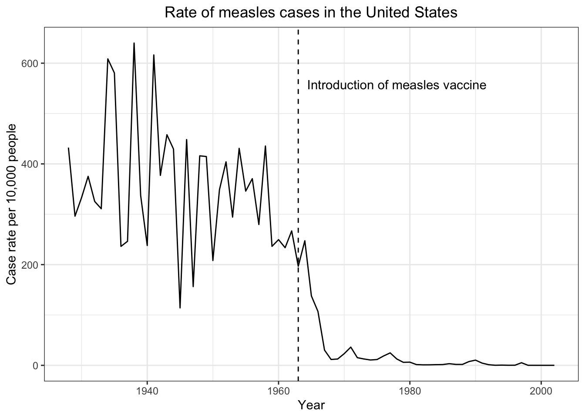
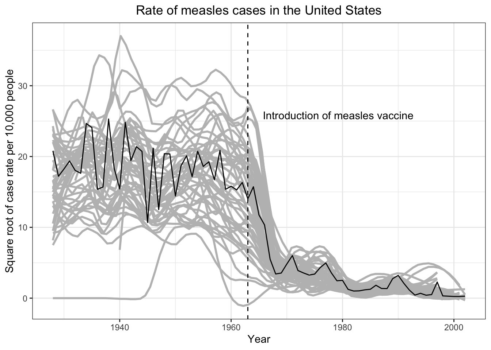
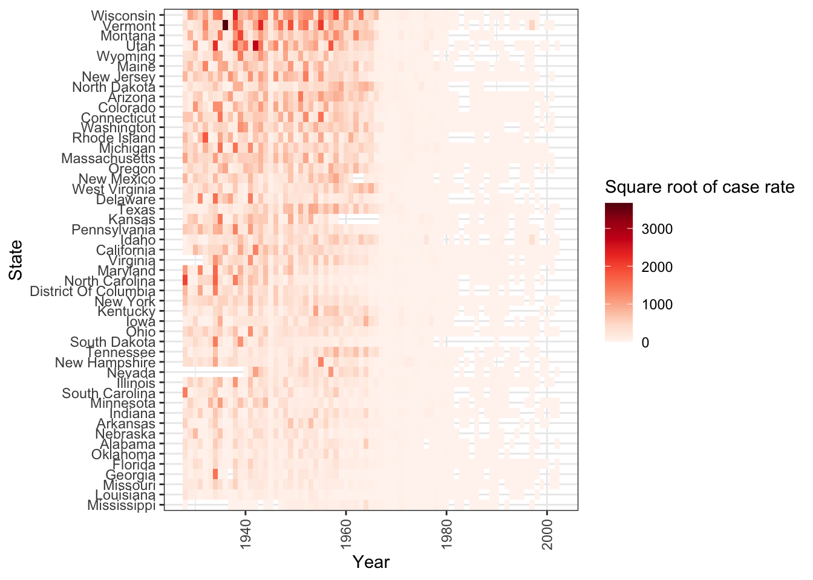

Vaccines Report
The measles vaccine was released in 1963. The chart below shows case rates averaged across all 50 states except for Hawaii and Alaska, dating back to 1928. The dslabs data set shows case rate data for the following diseases.
[1] "Hepatitis A" "Measles" "Mumps" "Pertussis" "Polio"
[6] "Rubella" "Smallpox" We choose to explore measles. Here is the case rate data averaged across the U.S. by year, showing the first 10 years.
| Year | U.S. Case Rate Per 10,000 People |
|---|---|
| 1928 | 432 |
| 1929 | 296 |
| 1930 | 333 |
| 1931 | 375 |
| 1932 | 325 |
| 1933 | 311 |
| 1934 | 609 |
| 1935 | 581 |
| 1936 | 236 |
| 1937 | 246 |
Here we can clearly see a reduction in case rate following the year the measles vaccine was introduced.

It is helpful to see the state by state trendlines in aggregate.

A heatmap helps visualize the case rate data by state and year.

It is evident from the data above that the introduction of the measles vaccine directly precedes reduced rates of measles in the United States. For states with high levels of measles before 1963, the drop off can be visualized with the heat map.